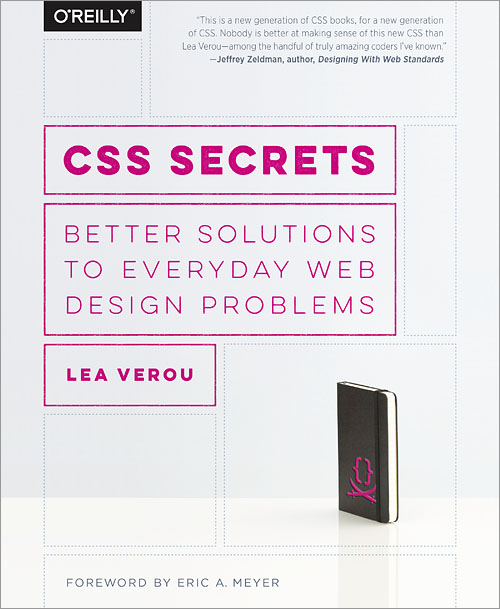

CSS for Decoration
@RazvanCaliman
- CSS Shapes
- CSS Regions
- CSS Masking
- CSS Blend Modes
- tools & prototypes
<insert-thing> done with CSS only


CSS features for decoration
- CSS Gradients
- CSS Filters
- CSS Blend Modes
- CSS Masking
- backgrounds
- box-shadow
- text-shadow
- borders
Agenda
- Background shapes
- Skeleton screens
- Better borders
CSS Gradients
CSS gradients are images, not colors.
CSS Background Properties
- background-image
- background-size
- background-clip
- background-position
- background-repeat
- background-attachment
- background-origin
An element can have
multiple background images, each with its own properties.
If all you have is a hammer,
everything looks like a nail.
— Abraham Maslow
D-D Play on Behance by 灰 昼

Skeleton Screens
Skeleton screen examples by Luke Wroblewski
Better borders
Gradient border
Image border
Range inputs


